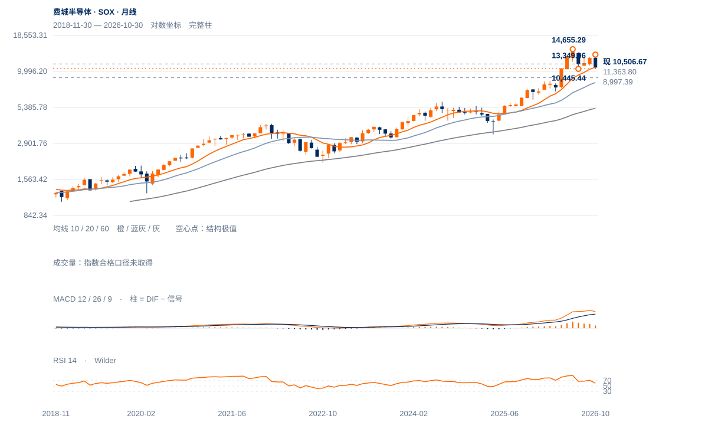

高波动修复
未来1—5日仍有较大双向波动，偏向反弹后检验承接；10174守位与10787回收决定短线强弱。
未来1—5日仍有较大双向波动，偏向反弹后检验承接；10174守位与10787回收决定短线强弱。
未来2—6周倾向8997—11364内高波动修复。10787原两日条件与10957缺口近沿是分层门槛，回收11364之前不提高到中期恢复。
未来1—3个月基准是深度调整后的筑底，8997守住且完整周收回11364后才明显改善。连续两周收低8997将把20月均衡8261推到更重要位置；要恢复新高扩张，还需先越过13350而非仅看反弹百分比。

展开图表 ↗今年6月14655.29才是年内大高，10月13349.96没有创新高。11月8997.39较6月高跌约38.6%，显著深于只看10月波段的32.6%。10月月收10688.80已经略低于10月均衡10742.86，但仍高于20月8260.87，处于长期升势中的深度中期调整，而非短线轻微回撤。
7月10445.44谷在11月初被打穿，截至6日完整周收9390附近仍在其下；当前10506.67只在进行中的本周暂时回收旧谷。先前8月12770.71、10月13349.96均低于6月14655.29，配合破谷形成中期弱势。两大峰差异较大，不强归严格等高双顶。
六月大峰后形成较低高区并跌破七月谷，中期损伤较深。10957—11364旧下缺口与10787反弹高点构成分层供应。
10月6日13349.96至11月5日8997.39，跌32.6%；现10506.67较低点反弹16.8%，仅回收约34.7%的原价差。反弹强不等同原高位结构恢复。
现价低于20日线10695.66、200日线10875.08；10月30日10957.32—11363.80下缺口未补。11日高10787.05仍未触及下缺口近沿。
11日上缺口10197.21—10287.32被12日低10174.12完全回补；12日收在日幅64.7%处，说明盘中回收仍强，但下一步保持尚待验证。
先连续两日收回10787.05；10957.32—11363.80作为上层缺口回收区，分阶段检验。
完整日收低于10174.12削弱本次修复；8997.39是更大级别低点失效线。
从8997低点反弹16.8%，最新低开后仍强回收，说明跌势并非单向；若11364迅速收复并抬高周谷，中期破坏的影响可能减轻。
| 周期 | 最后完整柱 | 图示柱数 | RSI14 | ATR14 | MACD柱 |
|---|---|---|---|---|---|
| 日线 | 2026-11-12 | 185 | 45.5768 | 544.42188 | 5.05472 |
| 周线 | 2026-11-06 | 156 | 37.3927 | 1080.44136 | -416.87634 |
| 月线 | 2026-10-30 | 96 | 60.25328 | 1563.20305 | 300.87732 |
美股价格拆股调整、不含分红再投资。完整周线至11月6日；11月进行中。指数成交量与全成分广度受限。